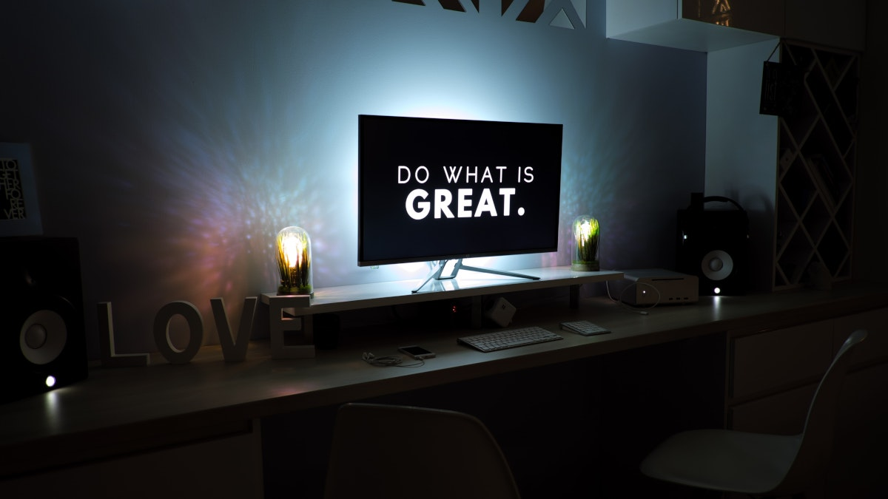

I'm Jeremie Chauvel, a Full-Stack Developer focused on solving business problems with extraordinary technical solutions.
What I love:
Agility
Exquisite user experience
Learning and teaching stuff
Extraordinary developer experience
Open source
Sports

I love working with:
Vue.js
Python
React.js
Node.js
At the moment, I'm interested in:
The JAMSTACK
Serverless
FastAPI
Contact me
You may reach me on the following platforms:
Open my LinkedIn
Add me on LinkedIn
Open my Twitter
Follow me on twitter @ChauvelJeremie
Open my GitHub
Ping me on GitHub @Jeremie-Chauvel